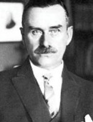

(1875 – 1955)

Hayatı boyunca savaşlara karşı çıktı, ama hem doğduğu coğrafya hem de yaşadığı yıllar itibariyle hep savaşlarla "savaştı". II. Dünya Savaşı'nda bir yandan yazarlık yaparken bir yandan da savaş karşıtı radyo konuşmalarıyla Alman ulusunu değiştirmeye çalışan Mann, "Buddenbrooklar / Bir Ailenin Çöküşü"nü yayımladığında henüz yirmi altı yaşındaydı.
Alman yazar Thomas Mann (okunuşu: Tomas Man), 6 Haziran 1875'te Lübeck'te doğdu. St. Mary's Kilisesi'nde Protestan olarak vaftiz edildi. Babası Thomas Johann Heinrich Mann varlıklı bir tüccardı. Annesi Julia ise Rio de Janeiro doğumlu bir Alman-Creole meleziydi. 1891 yılında babası ölünce okulu bırakan Mann, ailesiyle birlikte Münih'e taşındı. Burada bir sigorta şirketinde iş buldu ve 1895 yılında Teknik Üniversite'ye girdi. Yazarlık kariyeri Simplicissimus adlı dergide yayımlanan yazılarıyla başladı. Bu sırada ilk kitabı Küçük Bay Friedmann (1898) yayımlandı.
Mann, üniversitedeyken filozof Arthur Schopenhuer ve Friedrich Nietzsche'nin eserlerinden oldukça etkilendi. Ayrıca hayran olduğu başka bir insan olan müzik dehası Richard Wagner'in etkisi, yazarın başyapıtı olan Buddenbrook Ailesi'nde üslup ve teknik açısından yansıdı. Mann, bu dev yapıta 1897'de ilk olarak ailenin tek bir üyesi hakkında küçük bir öykü olarak başladı. Ancak içinde bulunduğu toplumsal yapıdan beslenerek öyküyü tipik bir Alman ailesinin dört kuşak boyunca süregelen çöküşünün destanına dönüştürdü. Burjuvazinin, yüksek Avrupa değerleri altında gelişirken, bunun getirisi olan din, ahlak ve lüks düşkünlüğüne boğuluşunu eleştirdi. Son Buddenrook olan genç müzisyen Hanno karakterinin ölümündeki trajedi, yazarın diğer eserlerindeki karakterlerinde de tekrarlandı. Buddenbrooklar (1901) romanı, yazarın adını dünya çapında duyurdu. Roman bugün bile çok satan Almanca eserlerden biridir.
Buddenbrooklar'dan sonra yazar, birçok kısa öykü yazdı. 1902 yılında Tristan derlemesinin parçası olan ve otobiyografik özellikler taşıyan Tonio Kröger yayımlandı. Üç yıl sonra, 1905'te Münihli varlıklı bir ailenin kızı Katja Pringsheim ile evlendi. Çiftin altı çocuğu oldu. 1909'da Haşmetmeapları adlı romanını yayımladı. Kendini kurban edilmiş gibi hisseden yazar, ardı ardına gelen öykülerindeki karakterlerde kendi yaşamının acılarını ve hapsedilmişlik duygusunu yansıttı. Soysuzlaşmış yaşam tarzından kaçarak bir aşkın peşinden Venedik'e giden bir sanatçının öyküsünü anlattığı Venedik'te Ölüm adlı öyküsü 1971 yılında İtalyan yönetmen Luchino Visconti tarafından sinemaya uyarlandı.
I. Dünya Savaşı sırasında muhafazakâr politik düşüncelerini terk ederek cumhuriyeti ve demokrasiyi savundu. 1918 yılında yayımlanan Apolitik Bir Adamın Düşünceleri adlı kitaptaki yazılarıyla tamamen savaş felaketini lanetlemektedir. Bir başka başyapıtı Büyülü Dağ'da savaşın anlamsızlığında kaybolan hümanizmi ve burjuvazinin yalıtılmış, sentetik dünyasını eleştirdi. Kitap, kuzenini görmek için gittiği seçkin bir sanatoryumda belirsiz bir hastalığa ya da sadece hastalık fikrine yakalanan Hans Castorp isimli bir mühendisin öyküsünü anlatır. Yaşamın gerçek olabilmesi için ölümün de gerçek olması gerektiğini düşünen yazar, karakterini yalıtılmış sahte hayatından kurtarırken çöküşün kucağına atar.
Büyülü Dağ'ın başarısı, 1929 yılında yazara Nobel Edebiyat Ödülü'nü kazandırdı. Yazar, ülkesinde gittikçe güçlenen Nazi rejiminin onunla çok uğraşmaya başlaması üzerine 1933 yılında İsviçre'ye göç etti. Burada dinî metinlerin ilk mizahi eleştirisi sayılabilecek Yusuf ve Kardeşleri isimli dört ciltlik eserinin ilk cildini tamamladı. Mann İncil'deki metinlerin asıllarına bağlı kalarak ustalıkla oluşturduğu eserinde, dinî yazıları dogma olmaktan çıkararak yeni ve insani bir bakış açısıyla eleştirdi. Faşizme karşı olduğunu her fırsatta belirten Thomas Mann, 1936 yılında Alman vatandaşlığından çıkarıldı ve Çekoslovak uyruğuna geçerek 1938 yılında ABD'ye taşındı. Burada Princeton Üniversitesi'nde ders verdi. 1939 yılında yayımlanan Lotte Weimar'da adlı eserinde yazar, Goethe'nin ünlü eseri Genç Werther'in Acıları'nın dünya tarafından anlaşılamamış olduğunu vurguladı ve hak ettiği değeri ona geri kazandırdı. 1944 yılında ABD vatandaşı olan Mann, II. Dünya Savaşı'nda Alman dinleyicileri için faşizm karşıtı radyo programları hazırladı. 1952'de İsviçre'ye döndü ve son eseri Felix Krull Adlı Dolandırıcının İtirafları'nı tamamlayamadan 12 Ağustos 1955 tarihinde Zürih'te hayata gözlerini yumdu.
Seçme Yapıtları: Küçük Bay Friedman (1898), Buddenbrooklar (1901 – Can Yayınları, 2009), Tonio Köriger (1903), Zor Saat (1905), Büyülü Dağ (1924 – Can Yayınları, 2009), Mario ve Sihirbaz (1929), Yusuf ve Kardeşleri (1. Cilt – 1933), Lotte Weimar'da (1939), Değişen Kafalar (1940 – Babil Yayınları, 2004), Doktor Faustus (1947), Felix Krull Adlı Dolandırıcının İtirafları (tamamlanamadı)